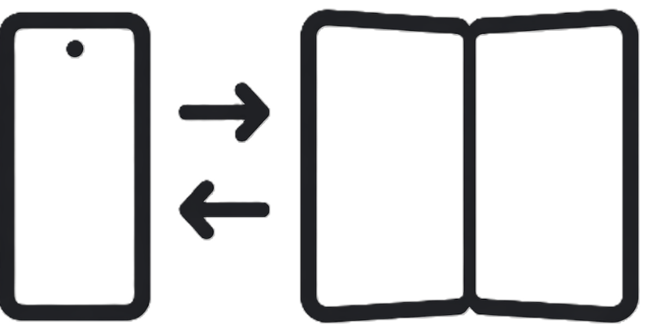

← Back
Loading...
Loading book...
GreatReads
✕
Reading Options
12
14
16
18
20
22
24
26
28
30
32
☀
☀
Font
+
Load
Paste a Google Fonts URL (e.g.
fonts.google.com/specimen/Lora
) or type the exact font name (e.g.
Lora
,
Merriweather
,
Source Serif 4
).
Ambient
Align
Flip 180°
On
Off

📖
◄ Previous
Next ►
📖
✦ ✦ ✦
Table of Contents
📖 Summaries
✕ Close
✕
This chapter
Story so far
◄ Prev
Next ►
✕
Bookmarks
✕ Close
📋
📤
📖
🌐
🗑️
‹
🌐
Loading…
✕
Lookup URLs
Dictionary URL pattern
Use
{word}
where the highlighted text goes.
Wiki URL pattern
Same — use
{word}
as the placeholder. Per-fandom wikis work: e.g.
https://redrising.fandom.com/wiki/Special:Search?query={word}
Cancel
Save